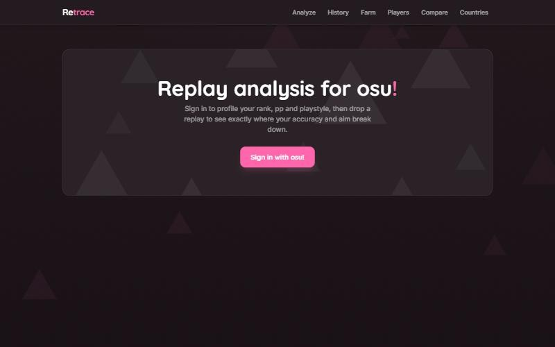

RetraceOSU
Replay analysis for osu!standard. Drop in a replay and it tells you what actually went wrong.

what it does
- Replay analysis: drop a .osr and it finds the beatmap by hash, then gives you UR, timing bias, a section and pattern breakdown, key balance and tap style, snap vs flow aim, a miss heatmap, and a strain vs UR overlay that shows whether you're hitting a skill wall or losing focus on easy parts
- Replay viewer: full player controls, variable speed, frame stepping, click to seek to a miss, and a ghost overlay to compare two replays of the same map
- Coaching: strengths, weaknesses and what to practice, worked out from the measured numbers, plus an optional AI review that only sees those real numbers so it can't make things up
- Farm maps: profiles your top 100 and recommends maps ranked by actual pp gain to your total, and flags chokes and bad-acc plays worth fixing
- Player and country lookup: rank history, pp milestones and a pile of trivia like your oldest surviving play and most farmed mapper
- History: replays you analyze save locally, with recurring weakness tracking and per-map progress
how it's built
Everything to do with the replay runs in your browser, including the actual osu! ruleset. Only pp math and osu! API calls touch the server, with rosu-pp-js running as WASM there. There's no database, just in-memory and disk caching for the API.